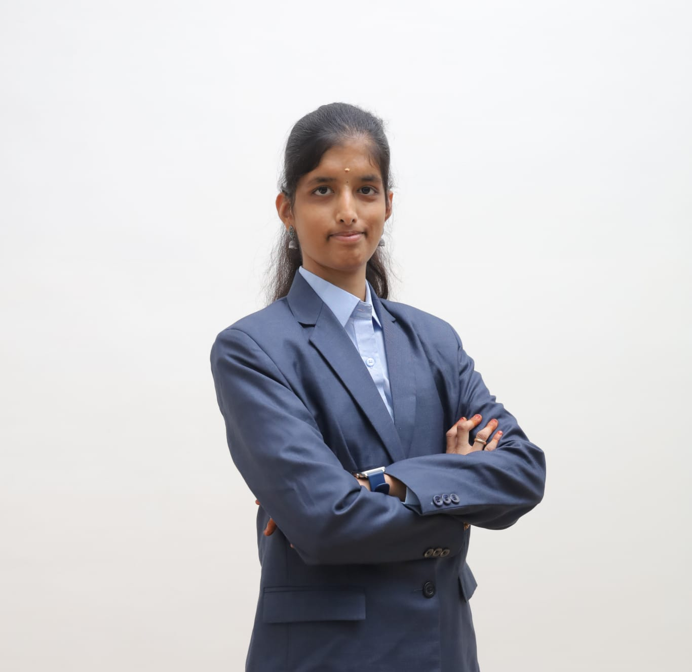

People-first thinking
I pay attention to how people experience a product and value clear, welcoming interactions.
I’m an AI and data science student drawn to thoughtful digital experiences. I bring structured problem-solving, a people-first perspective, and a growing practice in interface design and front-end development.

| UG | Sem | Grade | Institution | Year |
|---|---|---|---|---|
| B.Tech Artificial Intelligence and Data Science | 4th Sem | A+ | KPR Institute of Engineering and Technology | 2024 - Present |
I study Artificial Intelligence and Data Science at KPR Institute of Engineering and Technology. Alongside my coursework, I’m exploring how clear visual choices and useful interactions can make digital products feel easier to understand. I enjoy moving between a design idea and a working interface, and I’m looking for an internship where I can learn from a design team and contribute with curiosity and care.
A mix of human curiosity, technical thinking, and a willingness to keep refining the details.
I pay attention to how people experience a product and value clear, welcoming interactions.
My AI and data science studies help me break complex problems into understandable steps.
I’m building my practice across Figma, HTML, CSS, and JavaScript to connect ideas with implementation.
Interested in learning why an experience works, not just how it looks.
I value thoughtful collaboration, active listening, and useful feedback.
I enjoy learning new tools and improving an idea one detail at a time.